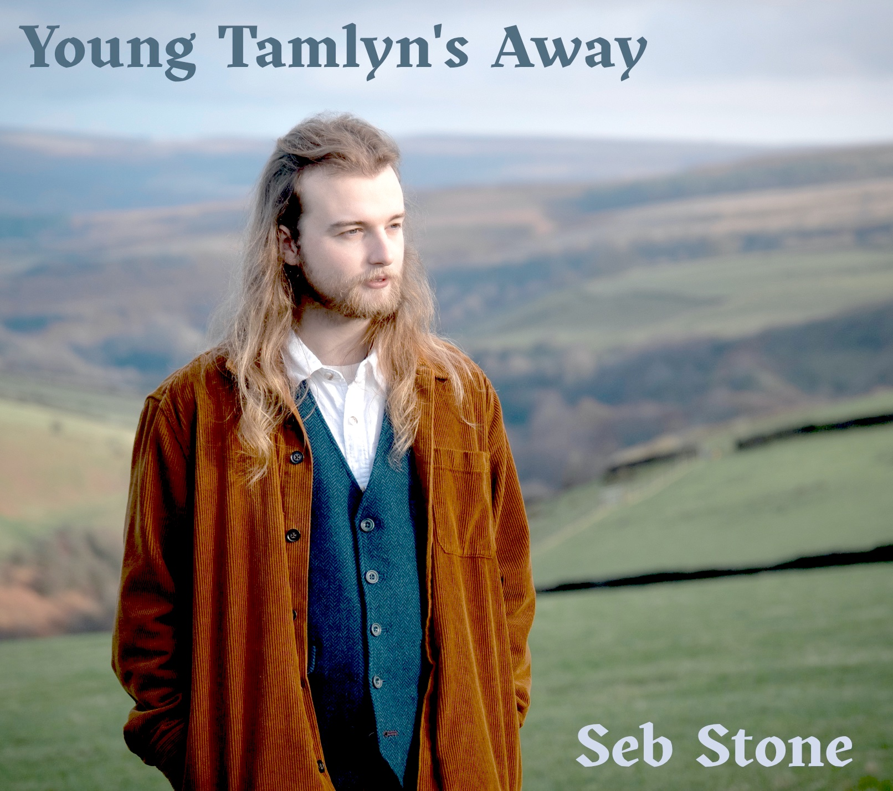

Welcome to Seb Stone Folk
Biography
Seb Stone is a young artist known for his deep passion for storytelling and a rich, melodious voice.

Gigs 2024
Upcoming Gigs
- 15th June - St Albans Folk Festival (Culverake)
- 16th June - The Quay Folk Club, Isle of Wight
- 18th June - The Green Note Camden, with support from Gwena Harman
- 30th June - Exile Music Festival, Derbyshire
- 4th-7th July - Gate to Southwell Festival, Southwell
- 11th July - Watts Russell Arms, Derbyshire
- 12th July - Bishops House, Sheffield, with Sam Baxter
- 26th-28th July - Cullerlie Traditional Singing Weekend, Aberdeenshire
- 2nd-8th August - Sidmouth Folk Festival
- 9th-11th August - Saltburn Folk Festival
- 16th-18th August - White Horse Folk Festival
- 19th-23rd August - Whitby Folk Week
- 24th August - Northgate Folk Festival
- 13th September - Bodmin Folk Club, Cornwall
- 29th September - Hyde Park Folk Club, Leeds, supporting Cohen Braithwaite-Kilcoyne
- 10th October - Samuel Worth Chapel, Sheffield
- 19th October - Glossop Labour Club, Glossop
- 27th October - Hyde Park Folk Festival, Leeds
- 2nd November - Royal Traditions Folk Club, Dungworth (Culverake)
- 7th November - Runnymede Folk Club, Egham, with Johnny Campbell
- 24th November - Thank Goodness Its Folk 10 year concert (Culverake)
- 29th November - Watford Folk Club (Culverake)
- 30th November - Lewes Folk Club (Culverake)
Previous Gigs
- April 18, 2024 - The Old Theater, Hamlet
- March 25, 2024 - Riverbank Club, Metropolis
- February 10, 2024 - Central Park Stage, Urbantown